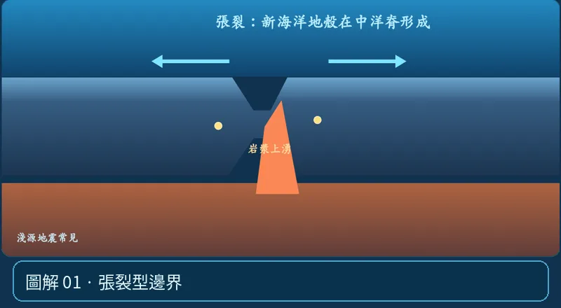

第 05 單元｜圖解 1/8｜課本 p.80–88
張裂型邊界
板塊向兩側分離，地函上湧減壓熔融，形成新地殼。海底常見中洋脊，大陸內可見裂谷；多為淺源地震。
① 看一眼② 操作圖③ 自己推理④ 揭開解答
🔬 這張圖，請自己動手試
操作圖上方的頁籤、滑桿或按鈕；圖片也能左右滑動放大觀看。
互動圖解 · 張裂型邊界

原創 SVG 地科教學模型，方便理解，非真實比例、非即時地震資料；互動無法載入時仍有靜態圖。
STEP 01 · 先觀察
👀 眼睛先找線索
看兩個板塊箭頭朝相反方向離開、中央岩漿上升，觀察中洋脊所在的位置。
💡 為什麼是這樣？
張裂讓地函減壓、部分熔融並形成新的海洋地殼；海底有中洋脊，大陸上可能形成裂谷，地震多偏淺。
🎯 換個問法想一題
張裂型邊界最典型的海底地形是海溝嗎？
我想好了，點開看答案 ↓
不是，海底張裂的代表是中洋脊。
⚡ 一句記住：分開，新地殼出生